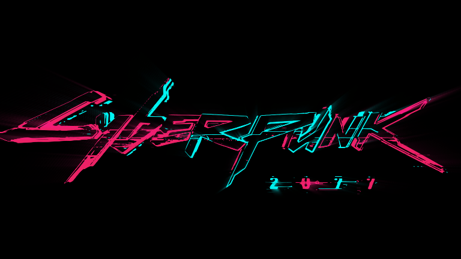
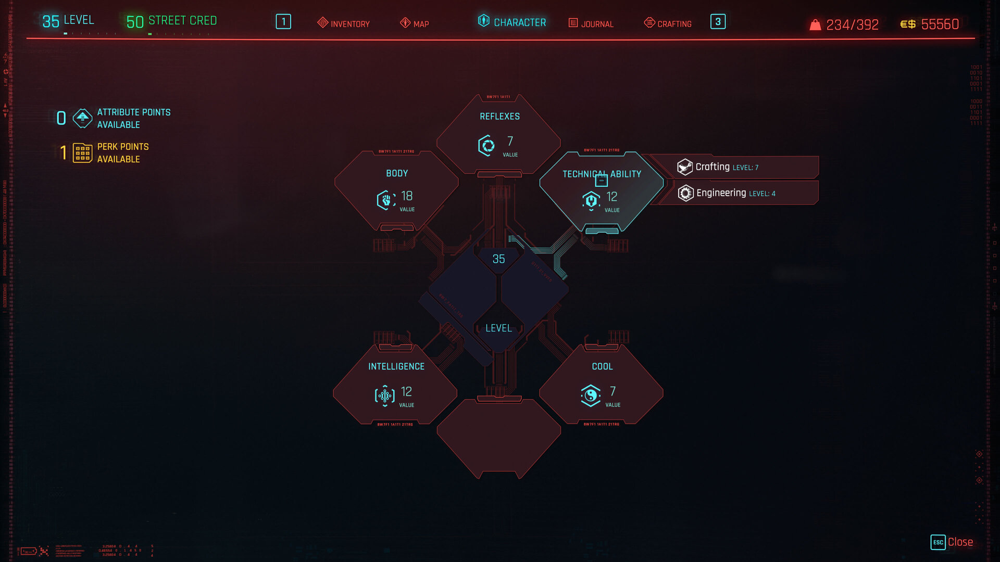
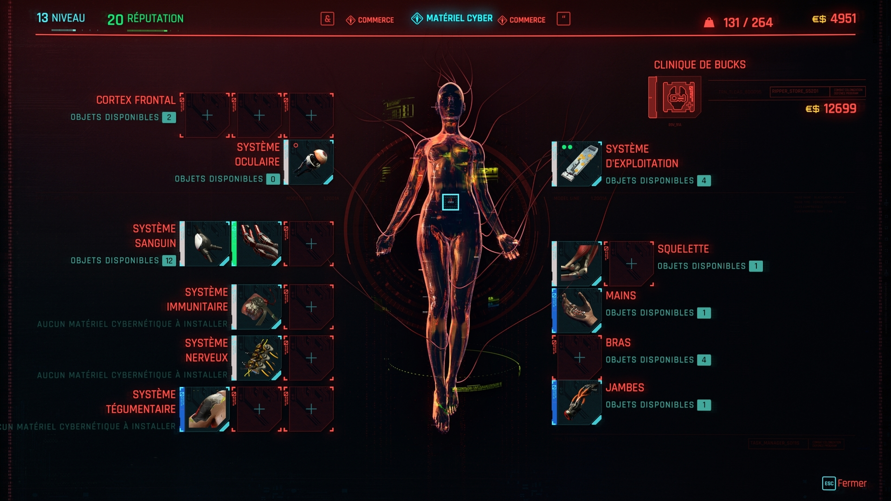

CyberWave
Bienvenue sur le site développé par Vérité Marius et Mayer Robin.
Vous retrouvez
des détails sur le jeu iconique Cyberpunk 2077™
Des Easter Eggs sont cachés sur le site,
sauras-tu les trouvés ?
| IMAGE | DESCRIPTION |
|---|---|
|  | |
| Découvrez cyberpunk2077 | |

Presentation
Cyberpunk 2077 est un jeu vidéo RPG en vue à la première personne, développé et édité par CD Projekt RED. Le jeu a été annoncé lors de la conférence d'été de CD Projekt RED de 2012 comme étant l'adaptation du jeu de rôle sur table officiel de Mike Pondsmith : Cyberpunk 2020. Initialement, sobrement nommé « Cyberpunk », le « 2077 » n'a été ajouté dans les derniers mois de 2012.
Cadre
Cyberpunk 2077 est dans la continuité des événements de Cyberpunk
2020, prenant place dans une voie alternative de Cyberpunk
V3.0. Le jeu se déroule
dans une métropole dystopique de Night City, en Californie.
Night City est situé au sud de San Francisco, dans le secteur de Morro Bay.
Dans Cyberpunk 2020, la population de Night City était proche d'environ cinq millions
d'habitants,
mais on
suppose qu'elle sera beaucoup plus importante en 2077.
Après un effondrement économique au début du XXIème siècle, les États-Unis
sont forcés de compter sur les méga-corporations pour survivre. Ces corporations exercent leurs
activités
dans un large
panel de domaines, tels que les armes, la robotique, la cybernétique, les produits pharmaceutiques, les
communications
et la biotechnologie, et bon nombre d'entre elles exercent leurs activités en dehors du cadre légal.
Le jeu suit l'histoire de V - un(e)
mercenaire en plein
essor à Night City, la métropole la plus violente et la plus dangereuse dirigée par les entreprises de
l'avenir. Un
créateur de personnage dynamique permettra aux joueurs de choisir le sexe de V, l'apparence visuelle,
ainsi
que le
contexte historique - tout cela peut influencer la configuration du jeu.
Le monde est inspiré par les travaux d'auteurs tels que William
Gibson (auteur de Neuromancien) et Philip K.
Dick, dont le roman Les androïdes rêvent-ils
de
moutons électriques ?, ainsi que les adaptations cinématographiques successives de
Blade
Runner. Mike Pondsmith s'est alors
fortement
inspiré de
ces œuvres pour la création de son jeu de rôle sur table.
Gameplay
Cyberpunk 2077 est un monde ouvert, au gameplay non linéaire de type RPG, dans lequel les joueurs sont en mesure de personnaliser intensément leur personnage en fonction de leur style de jeu. Les fusillades, l'exploration, les choix du joueur, et les activités comme le piratage sont à l'honneur tout au long du jeu avec des missions, des quêtes et des objectifs pouvant être réalisés de plusieurs manières différentes.
Perspective
Le jeu se jouera en vue à la première personne. Un nouveau système de combat a été développé autour de cette perspective, avec notamment l'utilisation d'armes, d'armes blanches, de pouvoirs, et même des stimulants de combat qui pourront offrir un bonus, avec par exemple, une vitesse améliorée. Les joueurs peuvent néanmoins choisir une vue à la troisième personne lorsqu'ils conduisent des véhicules. Bien que le joueur puisse utiliser des machines volantes, elles sont totalement automatisés.
Attributs
Les personnages des joueurs ont des attributs tels que la Force, qui peut être augmentée en mettant à niveau et en installant des cyberwares.
|  |  | 
|
| Construction de tes capacités | Cyber-equipement | Personnalise ton personnage |
Classes/Rôles
Cyberpunk 2077 comprendra un système de classe fluide, où V pourra essentiellement se plier à un trio d'arbres de compétences, permettant au joueur de choisir ce qui correspond le plus à son style de jeu et son expérience.
- Netrunner: ceux sont les hackers d'élite du monde, peut-être le mieux adapté aux joueurs qui préfèrent une approche furtive pour faire face aux problèmes. Leurs compétences peuvent leur donner accès à des objets banals comme des portes, à des systèmes plus complexes comme la sécurité et le chiffrement, et même au cerveau des gens.
- Techie: Pensez à ça comme aux ingénieurs, capable de construire et d'utiliser une variété d'armes, d'équipements et d'objets pour augmenter leur style de jeu. Les drones et les tourelles en sont quelques exemples.
- Solo: Des mercenaires dont les compétences sont axées sur le combat. Ils sont forts et rapides, et ont des capacités au corps-à-corps impressionnante.
Exploration
Options de dialogue
On peut faire défiler les options de dialogue pour en
sélectionner une. Les options de dialogue sont des
choix
importants qui vont faire progresser la conversation. Les options de dialogue bleues représentent des
choix
qui
pourraient révéler des informations précieuses ou conduire à des interactions intéressantes. Certaines
d'entre elles
sont liées à votre parcours de vie. Certaines options de dialogue apparaissent en gris, ce qui signifie
que
vous ne
remplissez pas l'exigence d'attribut nécessaire pour faire ce choix.
Développement
Au début de la réalisation, il a été dit qu'une équipe de cinquante personnes travaillaient sur le jeu, cependant, après que The Witcher 3: Wild Hunt fut achevé, l'équipe s'est considérablement agrandie et une douzaine d'offres d'emploi ont été proposées sur le site. Au début de l'année 2018, un nouveau studio a été ouvert à Wrocław, en Pologne pour assister le développement du jeu.
configuration requise
Retrouvez un tableau avec les différentes configurations requise afin de jouer dans les meilleurs conditions.